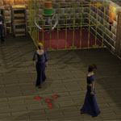
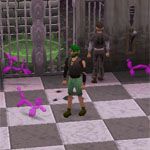

")
Zufällige Ereignisse
Einführung | Wie zufällige Ereignisse funktionieren | Ereignistypen | Belohnungen | Ehemalige Zufallsereignisse
Einführung
Während eurer Abenteuer auf RuneScape werdet ihr gelegentlich seltsame, unvorhersehbare Dinge erleben oder in eurer Nähe merkwürdige Geschehnisse bemerken. Bei diesen zufälligen Ereignissen erscheinen meistens ungewöhnliche Menschen oder Tiere, die euch eine Aufgabe oder ein Rätsel aufgeben. Das Ereignis wird euch nicht lange aufhalten und, wenn ihr euch geschickt anstellt, könnt ihr sogar davon profitieren. Haltet die Augen offen, denn zufällige Ereignisse können euch jederzeit und überall passieren.
Wie zufällige Ereignisse funktionieren
Bei zufälligen Ereignissen werdet ihr an einen entlegenen Ort teleportiert, der meistens - aber nicht immer - ein Teil von RuneScape ist. Ihr könnt so lange nicht zurück, bis ihr das Ereignis entweder erfolgreich abschließt oder daran scheitert. Wenn ihr eure Aufgabe erfüllt, werdet ihr an euren Ausgangspunkt zurückteleportiert. Solltet ihr scheitern, landet ihr an einem zufällig gewählten Ort. Wenn ihr mal scheitert, macht euch keine Sorgen. Ihr werdet nirgendwo Gefährliches hinteleportiert.
Zufallsereignisse können euch immer wieder mal ereilen, aber wenn ihr regelmäßig Ereignisse absolviert, nimmt die Häufigkeit ab.
Ereignistypen

Imker
Der Imker hat sich bei IMKEA einen neuen Bienenstock gekauft, hat aber leichte Probleme beim Aufbau. Helft ihm, indem ihr die vier Einzelteile richtig zusammensetzt - sonst bekommt ihr es mit einem ärgerlichen Bienenschwarm zu tun.
Käpt'n Arnavs Schatztruhe
Piraten sind nicht gerade für ihre Großzügigkeit bekannt, aber dieser hier ist anders. Vielleicht langweilt er sich auf seiner einsamen Insel oder die Sonne hat ihm das Hirn verbrannt... Jedenfalls zeigt er sich alles andere als geizig, wenn ihr ihm helft, seine Schatztruhe zu öffnen.
Zertifikator
Es gibt insgesamt drei sogenannte 'Zertifikatoren': Niles, Miles und Giles. Sie haben eine Vorliebe dafür, Abenteurer scheinbar zwecklosen Identifikationstests zu unterziehen. Am besten tut ihr ihnen einfach den Gefallen und spielt mit.
Feldwebel Ungemach
Auf die Matte und Liegestütze machen, ihr Waschlappen. Mit diesen oder ähnlichen aufmunternden Sprüchen hilft Feldwebel Ungemach eurer Fitness auf die Sprünge. Führt ihr seine Befehle aus und macht schweißtreibende Liegestütze, Sit-ups und Hampelmänner, dann verdient ihr euch seinen Respekt - und eine Belohnung.
Böser Bob
Der Böse Bob ist ständig auf der Suche nach menschlichen Sklaven, die ihn auf seiner mysteriösen Insel auf Schritt und Tritt bedienen. Er entführt euch nach ScapeRune und zwingt euch in die ewige Knechtschaft. Es gibt nur eine Chance zur Flucht: wenn Bob schläft. Doch ein leerer Bauch ruht nicht gern...

Böser Zwilling
Ihre böse Zwillingsschwester macht Molly das Leben schwer. Molly ist es gelungen, ihre Widersacherin einzufangen, doch diese hat kurzerhand ein paar unschuldige Schaulustige mit ins Gefängnis gezaubert. Wenn ihr es schafft, die böse Zwillingsschwester aus der Menge zu holen, ist Molly euch unendlich dankbar.
Verrückter Förster
Dieser seltsame Kerl hat eine Vorliebe für Fasan, lässt aber lieber andere Leute für ihn jagen. Dabei ist er auch noch wählerisch: Aus unerfindlichen Gründen ist ihm die Anzahl der Schwanzfedern des Fasans sehr wichtig. Passt also auf, dass ihr den richtigen Vogel erwischt, sonst wird der verrückte Förster wahnsinnig ärgerlich.
Küss den Frosch
Jeder weiß, dass man einen Frosch wieder in einen Prinzen (bzw. eine Prinzessin) verwandeln kann, indem man ihn küsst. Das klingt zwar etwas eklig, aber dafür bekommt man eine Belohnung. Wenn ihr also von einem sprechenden Frosch angesprochen werdet, dann schürzt schon mal die Lippen.
Friedhof
Der kurzsichtige Totengräber hat es irgendwie geschafft, fünf Särge in die falschen Gräber zu legen. Hätte er sich die Grabsteine angesehen, hätte er vielleicht gewusst, wo die Särge hingehören. Legt die Särge in die Gräber mit den richtigen Grabsteinen, dann gibt er euch todsicher eine schöne Belohnung.
Fundbüro
Wenn ihr plötzlich in einem Fundbüro landet, dann befindet ihr euch wahrscheinlich im Höllenschlund, einer Übergangsdimension für Leute, die sich verlaufen haben oder sonst irgendwie konfus sind. Keine Sorge, ihr solltet ohne größere Schwierigkeiten wieder nach RuneScape zurückfinden.
Labyrinth
Das Labyrinth ist schwieriger zu lösen, als es aussieht. Zum Glück steht euch der mysteriöse alte Mann mit gutem Rat zur Seite (beziehungsweise hinter euch). Wenn ihr euch ins Zentrum des Labyrinths durchschlagt, bekommt ihr einen Preis - je schneller ihr es schafft, desto höher ist die Belohnung.
Pantomime
Nachahmung ist die ehrlichste Form der Schmeichelei. Wenn ihr euch also plötzlich neben einem Pantomimen auf der Bühne wiederfindet, dann seht ihm gut zu und kopiert alle seine Gesten. Damit sichert ihr euch sein Wohlwollen, den Applaus des Publikums - und nicht zuletzt eure Freiheit!
Pranger
Manch unglückseliger Abenteurer wird sich im Pranger wiederfinden, einer Art Ein-Mann-Gefängniszelle, in der man mit verfaulten Tomaten beworfen wird. Sich daraus zu befreien, ist jedoch nicht allzu schwer - sofern man den richtigen Schlüssel findet...
Flipper
Das riesige Flipper-Spiel sollte euch keine großen Probleme bereiten. Behaltet die Säulen im Auge und berührt immer die, die aufleuchtet. Sobald ihr 10-mal die richtige Säule erwischt habt, seid ihr frei! Ach, und verärgert die Trolle am Ausgang nicht, sonst setzt es eine Tracht Prügel.

Prügel Peter
Der arme Prügel Peter steckt schon seit Jahren in der Spiegelwelt ScapeRune fest, und jetzt leistet ihr ihm dort auch noch Gesellschaft! Um Peter (und euch selbst!) zu retten, müsst ihr den Schlüssel zum Gefängnis finden. Vielleicht steckt er ja in einem dieser komischen Ballontiere.
Quiz-Meister
Willkommen bei RuneScapes beliebtester Quizshow: Finde das Falsche! Gratulation, ihr wurdet als Kandidat auserwählt. Um zu gewinnen, müsst ihr nur viermal hintereinander die richtige Antwort geben. Die Regeln sind leicht: Findet das Falsche!
Imbiss-Dame
Die Imbiss-Dame kümmert sich darum, dass alle Abenteurer gut im Futter stehen und entführt euch daher ab und zu auf einen Snack in ihren magischen Imbissladen. Sie ist sehr nett, nur etwas jähzornig - besonders, wenn sich jemand etwas nimmt, was ihm nicht angeboten wurde.
Klassenzimmer
Der geheimnisvolle alte Mann ist der Meinung, dass ihr ab und zu etwas Gehirntraining braucht. Er schickt euch daher in Herrn Mordauts Klasse, wo ihr zusammen mit einigen renitenten Nachsitzern euer logisches Denkvermögen beweisen müsst. Passt gut auf, dann werdet ihr schon bestehen!
Belohnungen
Für das erfolgreiche Bestehen eines Zufallsereignisses (mit Ausnahme des Labyrinths) bekommt ihr eine Schachtel mit einer kleinen Aufmerksamkeit. Daraus könnt ihr euch eine der folgenden Belohnungen auswählen: Münzen, Runen, Kohle, Essenz, Erze, Barren, Schmuckstücke, Kräuter, Samen, Siegel oder Erfahrungslampen. In manchen Geschenkschachteln befinden sich auch Kostüm-Punkte, die bei Iffie in Thessalias Feinem Kleidungsladen in Varrock gegen Kostümteile getauscht werden können.
Ehemalige Zufallsereignisse
Einige ehemalige Zufallsereignisse wurden in Rente geschickt, da die Personen oder Monster ihrem Job nicht länger gewachsen waren. Die meisten Wächter verbringen ihre alten Tage beispielsweise im verzauberten Tal (das ihr über die Feen-Ringe erreicht), während unangenehmere Zeitgenossen wie Käpt'n Hand bei Wasser und Brot im Gefängnis von Port Sarim einsitzen. Dr. Jekyll könnt ihr gelegentlich in die Apotheke von Varrock rennen sehen, während er verzweifelt versucht, Mr. Hyde in Schach zu halten. Und wenn es euch mal in den Südwesten von Brimhaven verschlägt, stoßt ihr dort auf eine altbekannte Pflanze, an der saftige wenngleich seltsame Früchte wachsen. Auch der betrunkene Zwerg stolpert gelegentlich noch unbeholfen durch die Gegend. Wenn ihr ihn ansprecht und er euch sympathisch findet, gibt er euch einen Kebab und ein Bier aus.

Weitere Artikel in Spielanleitung
|
|
|
Weiterführende Informationen Wenn euch dieser Artikel nicht weitergeholfen hat, könnt ihr in den folgenden Kapiteln der RuneScape-Webseite mehr Informationen finden:
|
|